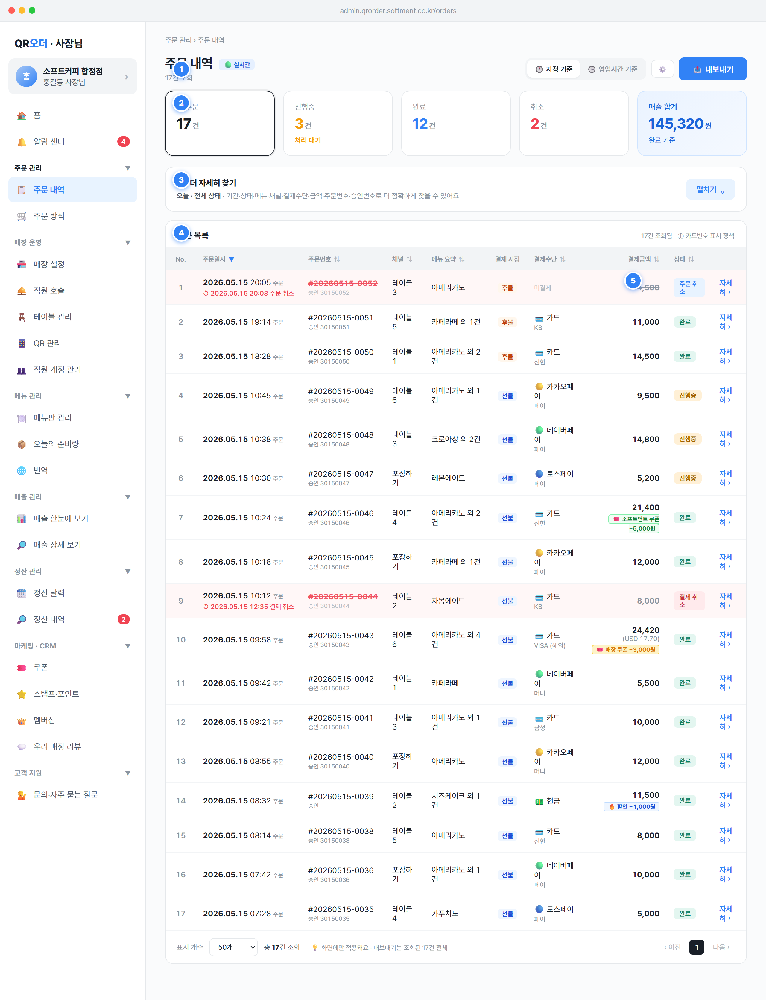

주문 내역 제목 옆): 항상 표시되는 상태 표식. 신규 주문 도착 시 PC 에이전트 팝업+사운드, 모바일 앱 푸시로 알린다(SPEC §1.8). 배지 자체는 클릭 동작 없음.🕛 자정 기준 ↔ 🕒 영업시간 기준: 클릭 시 state.useBusinessHours false↔true 전환 후 즉시 renderApp(). 기본값=자정 기준(false). 매장이 영업시간 기준으로 바꾸면 그 선택을 매장별로 저장(라스트 메모리)해 다음 진입·이후에도 같은 기준으로 보여준다. '영업시간 기준' 선택 시 라벨에 (open~close) 시각을 함께 노출하고, 본문 상단에 안내 배너(bhActiveNotice())를 띄운다.openBusinessHoursModal() 호출 — 사장님이 영업 시작/마감 시각을 직접 변경(자정 넘김 매장 지원)..btn-primary): openExport(rows.length, '주문 내역', 기간라벨) 호출. 현재 필터/정렬이 적용된 조회 결과 전체(rows.length 건)를 xlsx로 내보낸다(표시 개수 페이징과 무관).ORDERS 주문 트랜잭션 실시간 조회. 신규 주문은 OrderStatus.pending→accepted (PG 승인 콜백, Payment.status='paid') 시점에 목록 진입(STATES §1.1).useBusinessHours:boolean, businessHoursOpen/Close:'HH:MM'. 영업일 경계는 03:00 시작·다음 날 02:59 종료이며 자정 이후 거래도 영업 시작일 매출로 묶인다(SPEC §1.1).staff도 가능하나, 환불(결제 취소) 및 주문 거절은 owner 전용(SPEC §1.6, STATES §1.4). staff도 주문 내역은 전체 기간 조회 가능(사장님과 동일).repeat(5,1fr)): ①총 주문 ②진행중 ③완료 ④취소 ⑤매출 합계.setOrderStatus('all'|'진행중'|'완료'|'cancel-all'). 이미 선택된 카드를 다시 누르면 'all'로 토글 해제. 선택 카드는 색 테두리+box-shadow로 강조(진행중=amber, 완료=blue, 취소=red).status==='완료'인 주문의 amt 합), 클릭 진입점 없음. 하단에 "완료 기준" 라벨 고정.inProgressCnt=count(status='진행중'), completedCnt=count(status='완료'), cancelAllCnt=count(status='취소'), totalCnt=rows.length.totalAmt = Σ(o.amt where status='완료') = 완료 결제금액 합계(결제 기준) — 매출 화면의 실매출(actual=gross−할인−포인트−환불)과는 다른 개념이라 라벨은 '완료 결제 합계' 권장. 취소/환불 건 제외, 환불은 원거래일 매출에서 차감(SPEC §1.5).fmt()).status:'진행중'|'완료'|'취소'(표시값), amt:number 결제금액.--ink-3)으로 톤다운, >0이면 red 강조.toggleOrderAdvanced()): 펼칠 때 현재 라이브 필터를 orderFilterDraft로 복사. 헤더에 적용 중 조건 개수 배지("N개 조건 적용 중")와 현재 요약("기간 · 상태 …") 노출. 토글 라벨 펼치기/접기.openDateRangePicker('orders')로 시작·종료일 지정.o.menu)과 상세 items.name까지 부분 일치. 채널 칩: 전체/먹고가기/포장하기/(포장 예약은 기능 활성 시만 노출). 결제수단 칩: 전체/카드/카카오페이/네이버페이/토스페이/현금. 금액 범위: 최소~최대 입력. 주문/승인번호: 주문번호·승인번호·결제번호(tid) 통합 입력.clearOrderFilterDraft() — draft만 기본값 초기화) / [🔍 검색](applyOrderFilters() — draft를 라이브 state로 일괄 복사 후 갱신).id + tid + makeApproval(o) 결합 문자열 대상.orderDateFilter(today/yesterday/week/month/3m/custom/all), orderStatusFilter(all/진행중/완료/cancel-all), orderChannelFilter(all/매장/포장/포장 예약), orderPayFilter(payMain(o) 1depth 매칭), orderMenuSearch:string, orderAmountMin/Max:number, orderSearch:string.< 2025-05-15 차단.openOrderDetail(o)로 주문 상세 모달(영수증 단위) 오픈. 운영자가 한 주문의 전체 영수증·결제·환불 내역을 확인하고 취소/영수증 출력을 수행하는 진입점.setOrderSort, applySort). 결제 시점/No./자세히 컬럼은 정렬 없음.o.channel — "포장 예약"은 channel=takeout + 예약 속성(pickup_time·reservation_accepted_at)의 표시 파생 라벨, DATA_MODEL §4.1). 결제 시점 셀: 선불/후불 pill(orderPayType(o) — 포장·예약=선불, 매장 17~21시=후불 데모 규칙). 결제수단 셀: payLabel+paySub, 미결제는 "미결제".amt 굵게; 취소는 취소선. 쿠폰/할인 적용 시 칩 노출 — 🎟️ 소프트먼트/매장 쿠폰 −금액, 🔥 할인 −금액.#fff7f7), 주문번호 취소선+red, "↺ 취소일시 + 취소/결제 취소" 보조 라인.id) · 승인번호(makeApproval) · 결제번호 tid(maskTid) · 채널(channel(ch)) · 주문일시(취소 건은 취소 처리 일시 함께).name × qty · 옵션 칩(options[]) · 금액(price*qty), 합계 수량.originalAmt) · 쿠폰 할인(couponAmt, couponIssuer = softment=정산 보전 / store=매장 발행·정산 제외) · 할인(discountAmt) · 최종 결제금액(amt). 취소 건은 결제금액 취소선 + 실매출 0원.payLabelFull = 1depth+2depth) · 카드번호(maskCard 마스킹) · 외화(currency, 있을 때).unit_price_snapshot 유지). 취소·환불은 매출·정산 화면의 원거래일 차감과 연동(SPEC §1.5).colspan 빈 행에 "조건에 맞는 주문이 없어요. 날짜 범위를 넓히거나 필터를 해제해 보세요.".****-****-****-****) + "🔒 1년 초과 마스킹", 결제번호 일부 마스킹. 모달 상단 안내 "🔒 결제일로부터 1년 초과 거래 — 보안 정책에 따라 카드번호·결제번호 일부가 마스킹돼 표시돼요. 마스킹 해제는 운영팀 본인 인증을 통해서만 가능합니다." 목록 행엔 "🔒 1년 초과" 표식.accepted=결제 완료·신규) → 조리중(cooking) → 조리완료(ready) → 완료(completed) / 취소(cancelled) (STATES §1.1~1.2).status='accepted' + reservation_accepted_at IS NULL)에서 예약 수락 / 예약 거절을 거침. 거절은 자동 환불(STATES §1.3).Payment.status='paid'이면 결제 취소(환불 발생), 아니면 주문 취소.refund 테이블에 기록(original_payment_id, refunded_at)되고 원거래(결제)일 매출에서 차감(SPEC §1.5). 부분 환불 시 결제건수 1 유지·환불건수 +1.version 컬럼), 충돌 시 최신 상태 재조회 후 재시도(SPEC §1.7).